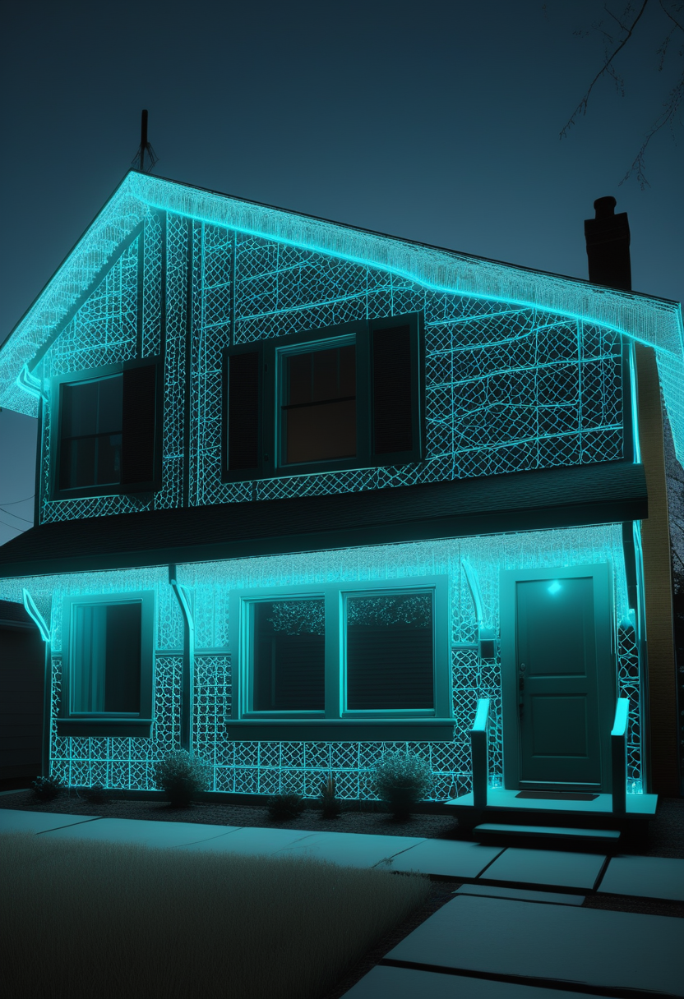
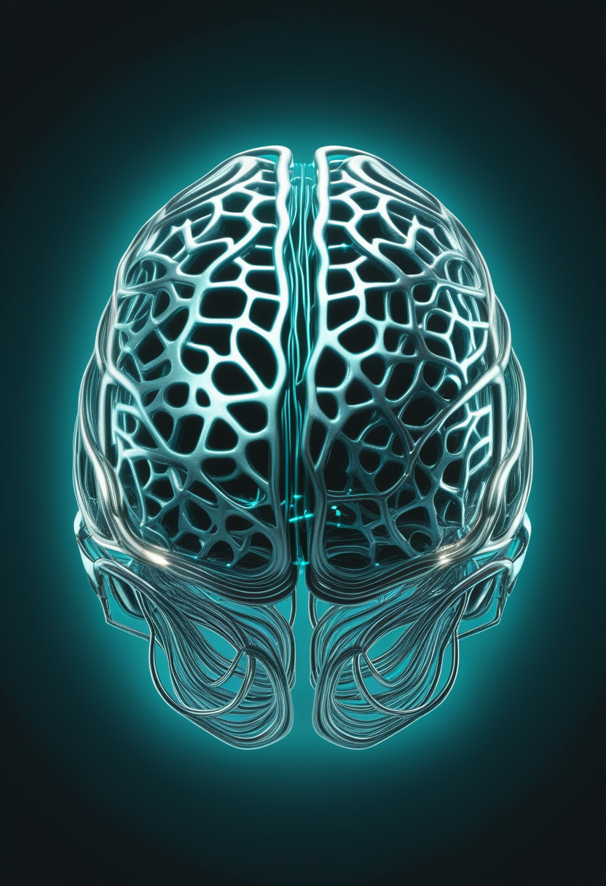
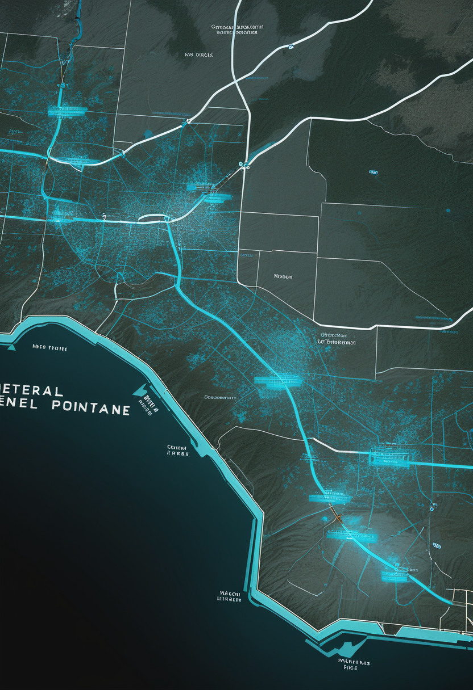

コンゴ民主共和国のエボラは死者5,026人に達し、新規感染の8割が追跡できない経路から出ている。米国は本日11/3から「21日間DRC非滞在」の署名を入国の条件にした。数字は重いが、水際と現場の対応は止まっていない。
前号(11/2号)は米国の麻疹拡大を今日の一本に選んだが、今号はエボラに戻した。コンゴ民主共和国(DRC)保健省が10/31に公表したデータで、エボラ(ブンディブギョ型)の感染者は10,351人、死亡は5,026人となり、死者が初めて5,000人を超えた(回復2,788人)。流行はDRCの26州のうち8州・178保健区域のうち67区域に広がり、アフリカCDCは新規例の約8割が「追跡している接触者」以外から出ていると警告している。感染の連鎖を把握しきれない状況が続くなか、米CDCは本日11/3から12/18まで、米国行きの国際線に乗るすべての人に「過去21日間DRCに滞在していなかった」ことを署名で示すよう義務づける新規則を始動させた。21日はエボラの最長潜伏期間に合わせた期間で、DRCの空港での乗り継ぎも「滞在」とみなされる。数字は重いが、水際と現場の両方で、手を緩めない対応が続いている。
Scholar Rockは10/8、SMAの筋肉標的薬アピテグロマブ(米国名Isembyld)の販売承認申請を欧州医薬品庁(EMA)に再提出した。前回は製造委託先Catalentのインディアナ州の充填工場の問題がつまずきとなったため、9月の米国承認を支えた別の米国施設に切り替えた。CHMP(欧州の審査委員会)の見解は2027年前半の見込みで、欧州での発売はその後になる。
バイオジェン・カナダは10/26、カナダ医薬品庁(CDA)がスピンラザ(ヌシネルセン)の公的償還を広げる勧告案を出したと発表した。対象は遺伝子検査で確定した5q型SMAで、SMN2遺伝子のコピー数が2〜4の患者(成人を含む)、条件付き。意見募集は10/22〜29で、最終勧告は12/1の予定。2022年の前身機関(CADTH)は成人への償還に反対していたため、方針の転換になる。ただし実際の保険適用は各州の判断が必要で、すぐには変わらない。
名古屋のCraifは10/8、第53回日本マススクリーニング学会で、新しいSMAスクリーニング検査の前向き試験の結果を発表した。産科施設の協力で新生児1,312例を調べ、特異度は100%だった。感度は過去のSMA患者の検体で評価して100%としている。生後1.5時間以内に結果を出す「Day 0」検査をめざし、数週間かかることがある従来のろ紙血検査を補う位置づけ。企業の発表で、査読論文ではない点に注意。
新薬の「承認」から、欧州・カナダでの「誰に、どこまで届けるか」へと焦点が移っている。日本では、生まれてすぐ見つけて早く治療につなぐ検査の数字が固まってきた。

Neuralinkは10/29の投稿で、言語回復の臨床試験「VOICE」に参加するALS患者の自宅に技術者が泊まり込み、72時間で機能を改良したと報告した。本人が実際に使う様子を見ながら、話そうとする意図の自動検出、「Hey Neuralink」と念じてAIのGrokを呼び出す試作機能、iPhoneの通話との連携などを作り、30以上のアプリ版を試したという。2〜3週間分の進歩を3日で得たとしている。ただしGrok連携は試作段階で、査読済みのデータではなく企業側の発信である。

侵入型BCIを開発する君柔科技は、約1億元(人民元)の天使+ラウンドを完了したと11/2に報じられた。順為資本が主導し、高瓴創投やロボット企業の智元機器人などが加わった。資金は、独自の「神経蠕虫(NeuroWorm)」電極の製造工程の確定、GMP生産ラインの建設、動物実験、信号処理アルゴリズムの改良に充てる。直径約100マイクロメートルの繊維電極を数ミリの穴から入れ、磁気で頭の中を動かせるとしている。いずれも会社と報道による説明で、独立した検証はまだない。
Journal of Eye Movement Research誌に10/23、実世界で使う視線追跡システムの研究を整理した系統的レビューが掲載された。別の人や環境に持ち込むと精度が落ちる問題、照明や頭の動きへの弱さ、学習データの偏りなどを主な課題に挙げている。視線入力で意思を伝える人にとっても、ベッドサイドや屋外で安定して使えるかどうかに直結するテーマである。
米国は「利用者の生活の場で作り込む」段階、中国は新しい電極の量産準備へ。視線入力は大きなニュースはないが、実環境での使いやすさを高める基礎研究が続いている。

DRC保健省の10/31発表で、感染者は10,351人、死亡は5,026人、回復は2,788人。致死率はおよそ5割で、DRCで最大、世界でも2014〜16年の西アフリカに次ぐ規模の流行になった。東部のイトゥリ州と北キブ州だけで確定9,782例・死亡4,792例を占める。ECDCの集計(10/29時点)は確定10,274例・死亡4,992例で、集計日と数え方が違うため数字は一致しない。CIDRAPによると新規例は1日50〜80例で、アフリカCDCは新規例の約80%が把握済みの感染経路の外から出ているとしている。10月にはケニアとナイジェリアでも患者が報告された。ブンディブギョ型に承認済みのワクチン・治療薬はまだない。
米CDCは、米国行き(米国での乗り継ぎを含む)の国際線に乗るすべての人に、搭乗前21日間にDRCにいなかったことを署名で示すよう求める規則を出した。期間は11/3〜12/18(CIDRAPなど。12/22とする報道もあり要確認)。米国民・永住者・外国人、大人・子ども、乗務員も対象で、DRCの空港での乗り継ぎ(機内にとどまった場合も含む)も「滞在」とみなされる。航空会社が署名を確認し、署名のない人の搭乗を断る。21日はエボラの最長潜伏期間に合わせた期間。
厚生労働省の10/30発表で、第43週(10/19〜25)の全国の定点当たり報告数は9.49人で、前週から0.41人増えた。都道府県別では愛媛県の22.82人が最も多く、北海道・宮城・埼玉・千葉・福岡・沖縄など16道県で注意報の目安(10人)を超えた。今季は第34週(8/17〜23)に流行開始の目安(1.00)を超え、1999年以降では2009年に次いで2番目に早い流行入りだった。米国でも10月中旬のインフルエンザ入院率が2010〜11年シーズン以来の高さだとして、CIDRAPが早めのワクチン接種を呼びかけている。
エボラは「数」より「追跡できない感染が8割」という点が深刻で、封じ込めの難しさを示す。米国の署名規則は年末の旅行シーズンにかかるため、運用の混乱にも注目。日本はインフルエンザの早い流行が冬本番に向けてどう推移するかが焦点。
NASAは10月末、HubbleとWebbで同じ空域を同時に観測し、海王星より外側を回る未知の小天体を27個見つけたと発表した。2つの望遠鏡を一緒に使って太陽系外縁天体を調べたのは初めて。いずれも直径40km未満で、最小は約10km。表面は太陽系ができた頃の色や成分を保っているとみられ、小さな天体の数は惑星形成モデルの予測より少なかった。論文は9/8にAstronomical Journal誌に出ている。
CERNのATLAS実験は10/26、トップクォークが1個だけ生まれる過程のうち最もまれな「sチャネル」を、統計的有意度5.1σで観測したと発表した(期待値5.2σ)。これまでは米フェルミ研究所のCDFとD0の合同結果でしか見られておらず、1つの実験で観測したのは初めて。13TeVの陽子衝突データ(140fb⁻¹)をグラフニューラルネットワークで解析した。2022年の測定は3.3σにとどまっていた。論文はPhysical Review Letters誌に投稿中。
独NVisionとウルム大、ヘブライ大のチームは、結晶の中に置いた1個のカルベン分子を、光でやり取りできる量子ビットとして操作したとNature誌に報告した(10月下旬掲載)。4.5K(約マイナス269℃)で、量子状態を保てる時間(コヒーレンス)が約2.2ミリ秒、スピンの緩和時間が約21ミリ秒だった。分子は設計して大量に作れるため、量子ネットワークの部品になりうる。ただし今回は1個の分子での実証で、実用的な規模はまだ先。
天文は「2台の望遠鏡の合わせ技」で、太陽系の材料が残る外縁部に新しい手がかり。素粒子と量子では、まれな現象の観測や分子量子ビットの実際の性能など、基礎の積み上げが続く。
Microsoft AIのCEO、ムスタファ・スレイマン氏は11/1にXで、意識をもつAIを作るのは「無謀」で作るべきではないと投稿した。今のAIには意識も主観的な経験もなく、苦しむこともないとしたうえで、もし訓練中に意識の兆候が現れたら、その性質を取り除けるようになるまで開発を止めるよう求めるとした。意識の証拠が見つかればすぐ公表すべきだとも述べている。一方、モデルの「福祉」を真剣に検討する企業や研究者もおり、議論は分かれている。
スタンフォード大のWu Tsai神経科学研究所は「Stanford Digital Brain Project」で、さまざまな脳画像データを学習した基盤モデルにより、いろいろな場面での脳の反応を予測するモデルを作ろうとしている。7テスラのfMRIや、頭にかぶる新型の脳磁計(OPM-MEG)を使う。The Transmitterの報道では、Metaが1,500万ドルを出し、1万5,000時間分の画像データを集める計画とされるが、大学は総額を公表しておらず要確認。
ルーマニア国立歴史考古学博物館(コンスタンツァ)の調査チームが、古代都市トミスの共同墓地の北端で、2〜3世紀のローマ時代とみられる未盗掘の子どもの石棺を発見したと10月末に報告した。中には木製の内棺、コイン、花環とともに、おんどり形の土製ラトル(鳴子)と、彩色が残るもう一つの玩具が納められていた。副葬品の大きさから、当初推定された4〜5歳より幼い子の墓である可能性が高いとみられている。守り袋(ブッラ)の飾りも2点見つかった。死因や性別は未確定。
「意識をもつAIは作るべきでない」という主張が企業トップから出る一方、人間の脳を写し取るデジタルツインには投資が進む。地中からは、幼い子を弔った2,600年前の玩具が、今日初めて光を浴びた――人が「残す」ものの形は、技術も遺跡も変わらず多様だ。
今日は、重い数字とそれに応える手の両方が目立つ一日だった。コンゴ民主共和国の最前線では、追えない感染経路を追う努力が続き、空港では新しい署名の列ができる。研究の現場では、AIに意識を持たせないという誓いと、人の脳を写し取ろうとする試みが同じ週に報じられた。そして地中では、2,600年前に弔われた幼い子の玩具が、今日初めて光を浴びた。数字がどれだけ重くても、記録し、調べ、弔い、備える手は止まらない。
積み重なる数字の向こうにも、明日へ続く仕事がある。おやすみなさい。